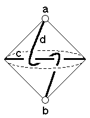

219
219
 221
221 Orbifold Atlas Home Page
Orbifold Atlas Home Page
 Crystallographic Topology Home Page
Crystallographic Topology Home Page
Underlying Topological Space: RP2 double suspension; Figure Pseudo-Symmetry (FPS): 2
Euclidean 3-Orbifold with Invariant-Lattice-Complex Letters
(left), Wyckoff Site Letters (right)

| FPS | Mult | Lattice Comp | Group Graph | Wyckoff Set | 2[4]Cover |
| 12-1 | S | 20 | a | ||
| 12-1 | 'S | 20 | b | ||
| 16-1 | [I2,Y**]& | <3>& | c: | ||
| 24-1 | S2[V*]'S2 | 0<2>0 | d:a-b | ||
| 48 | 1 | e:cd | |||
| 2 | 48-1 | Y**3[W2]V*2 | 2*=33<1>22 | e1:c-d | #230(g) |
219
221
Orbifold Atlas Home Page
Crystallographic Topology Home Page
Page last revised: